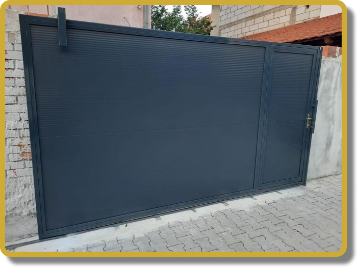
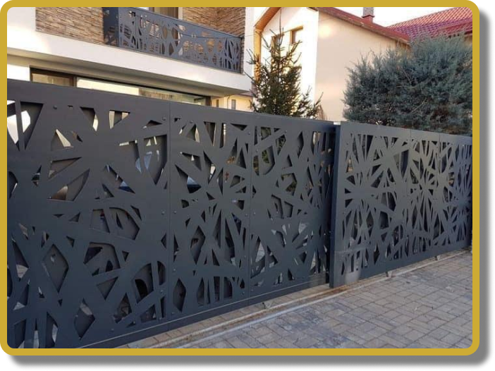

Willkommen in unserer Gartentürkollektion, bei der Form mühelos auf Funktion trifft. Entdecken Sie eine Reihe von Optionen, von klassischen Holz- bis hin zu modernen Stahldesigns, die Ihren Außenbereich aufwerten und gleichzeitig Sicherheit gewährleisten. Entdecken Sie die Eleganz der Glaspaneel-Optionen oder entdecken Sie den Charme schmiedeeiserner Gartentüren. Definieren Sie Ihren Garten neu mit Türen, die Stil und Zweck nahtlos vereinen.
Hoftüren





